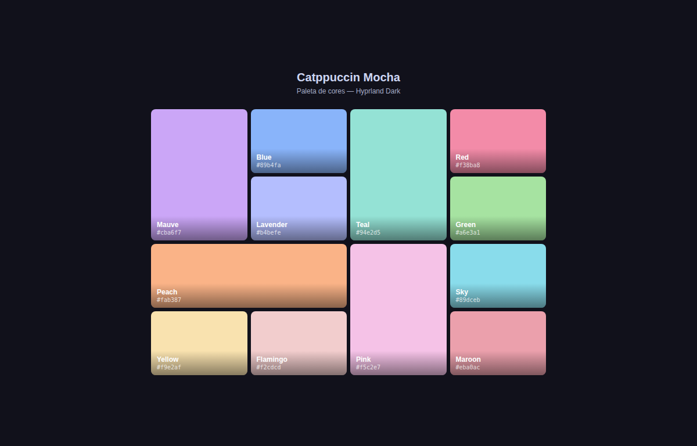

yago@y4g0pop-os
─────────────────────
OS Pop!_OS 24.04 LTS x86_64
WM Hyprland 0.41
Shell fish 3.7.1
Terminalkitty 0.36
Editor nvim 0.10.2
Kernel 7.0.11-76070011-generic
Uptime 4h 12m
Mem 3.8G / 16.0G
Disk 68G / 476G (14%)
Repos 12 públicos
Langs Python · JS · C
Foco IA · multi-agentes · web
─────────────────────
yago@y4g0pop-os:~/projetos/C-D-H$ python benchmark.py --ollama --modelos 7
[2025-06-16 23:07:18] iniciando CDH benchmark · 12 conversas por modelo
──────────────────────────────────────────────────
[CDH-1] llama3.2:3b score=0.94
[CDH-2] mistral:7b score=0.88
[CDH-3] qwen2.5:7b score=0.91
[CDH-4] phi3:medium score=0.76
[CDH-5] gemma2:9b score=0.85
[CDH-6] deepseek-r1 score=0.93
[CDH-7] solar-pro score=0.89
──────────────────────────────────────────────────
[OK] média: 0.882 · melhor: llama3.2:3b (0.94) · tempo: 47.3s
yago@y4g0pop-os:~/projetos/C-D-H$ ▋
C-D-H — Ciclo de Desambiguação Hierárquica
Sistema multi-agente LangGraph implementando o CDH. Benchmarked em 7 LLMs locais via Ollama — base do TCC.
github.com/y4g0o/C-D-HC-D-A — Desambiguação Adaptativa
Variações do protocolo CDH em diferentes configurações de agentes. Testes e métricas comparativas de LLMs.
github.com/y4g0o/C-D-Aclone-tabnews
App full-stack do zero inspirado no TabNews. JS moderno, foco em arquitetura e boas práticas de backend.
github.com/y4g0o/clone-tabnewslab — experimentos
Estudos pessoais, experimentos com agentes locais e automações. Repositório de aprendizado contínuo.
github.com/y4g0o/labcompilador — yagolang
Compilador acadêmico para a linguagem yagolang. Análise léxica e sintática com Lex/Yacc, em C.
ia-assistente-pessoal
Assistente de IA pessoal para automações do dia a dia. Integração com APIs locais e remotas.
github.com/y4g0o/ia-assistente-pessoal N2 · Metro UI
N2 · Metro UI
 N2 · Tabela
N2 · Tabela
 N2 · App (SolidJS)
N2 · App (SolidJS)

N1 · Layout Colorido